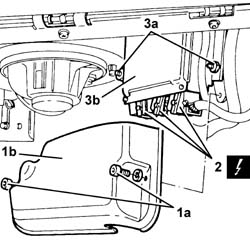
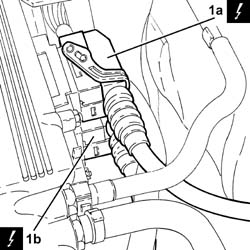
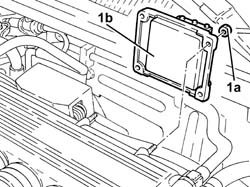
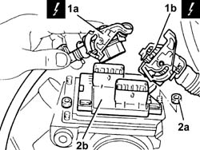

1056B82 injection/ignition system e.c.u. (one) - r + r
- Path
- Procedures > 10 ENGINE > 1056 PETROL INJECTION SYSTEM > 1056B multi-point injection system (mpi) > 1056B82 injection/ignition system e.c.u. (one) - r + r
- Kind
- repair procedure (removal / refitting; the operation number is the code)
- Applies to
- engines: 1.6 TS , 1.8 TS, 2.5 V6, 3.2 V6; all production periods
- Interactive page
- https://sloeber94.github.io/elrnDB-a156/en/#/3237544
Applies to: engines: 2.5 V6; all production periods
 Removing
Removing
 Refitting
RefittingEnsure that the ignition key is in the OFF position, then disconnect the negative battery terminal.
 | Name | Connector |
|---|---|---|
- | Battery |
1. Working from the passenger compartment, undo bolts (1a) and remove injection/ignition control unit guard (1b).
2. Disconnect the electrical connections from the fuel injection/ignition control unit.
| Name | Connector |
|---|---|---|
2 | Engine management ECU |
3. Undo nuts (3a) and remove injection/ignition control unit (3b).

Applies to: engines: 2.5 V6; all production periods
Refitting
RemovingFit the injection/ignition system control unit and fix it using the nuts.
Connect the electrical connections to the fuel injection/ignition control unit.
Fit the injection/ignition system control unit guard and fix it using the nuts.
Connect the negative (-) battery terminal.
Applies to: engines: 2.5 V6, 3.2 V6; all production periods; only with equipment: Euro 3
Removing
RefittingEnsure that the ignition key is in OFF position, then disconnect the negative battery terminal.
| Name | Connector |
|---|---|---|
- | Battery |
1. Disconnect the electrical connections (1a) and (1b) from the injection/ignition system control unit.
| Name | Connector |
|---|---|---|
1a | Engine management ECU |
| Name | Connector |
|---|---|---|
1b | Engine management ECU |

Applies to: engines: 2.5 V6, 3.2 V6; all production periods; only with equipment: Euro 3
1. Undo nuts (1a) and remove injection/ignition control unit (1b).

Applies to: engines: 2.5 V6, 3.2 V6; all production periods; only with equipment: Euro 3
Refitting
RemovingPlace the injection/ignition system control unit back in its housing and fix it using the bolts.
Connect the electrical connections to the fuel injection/ignition control unit.
Connect the negative (-) battery terminal.
Applies to: engines: 1.6 TS ; all production periods
Removing
RefittingEnsure that the ignition key is in stop position, then disconnect the battery negative terminal (-).
| Name | Connector |
|---|---|---|
- | Battery |
1. Release and disconnect the electrical connections (1a) and (1b) from the injection/ignition system control unit.
| Name | Connector |
|---|---|---|
1a | Engine management ECU |
| Name | Connector |
|---|---|---|
1b | Engine management ECU |
2. Undo the nuts (2a) and remove the injection/ignition control unit (2b).

Applies to: engines: 1.6 TS ; all production periods
Refitting
RemovingFit the injection/ignition system control unit and fix it using the nuts.
Connect and attach the electrical connections to the injection/ignition system control unit.
Connect the battery negative terminal.
Topics linked from this page (5)
- 1056B81 run electronic ignition/injection control unit (single) self-learning procedure
- A1B Battery ( BATTERY NEGATIVE )
- M10 Engine management ECU
- M10A Engine management ECU ( ENGINE )
- M10B Engine management ECU ( ENGINE )
Topics that link to this page (30)
- B10 ENGINE DOES NOT START / UNDER NO CIRCUMSTANCES
- B13 ENGINE STARTS WITH DIFFICULTY'
- B20 ENGINE STARTS, AND CUTS OUT STRAIGHT AWAY
- D01 ENGINE NOT RUNNING SMOOTHLY / (HESISTANT)
- D02 ENGINE NOT RUNNING SMOOTHLY / (LOSING POWER)
- D03 ENGINE NOT RUNNING SMOOTHLY / (IRREGULAR OPERATION)
- D05 ENGINE DOES NOT PRODUCE BEST PERFORMANCE
- D10 ENGINE IDLE IRREGULAR
- D21 ENGINE CUTS OUT WHILST DRIVING
- Z54 MISFIRE ERROR IN ONE CYLINDER
- 0510A10 cylinder compression - check for loose spark plugs or injectors
- 0520G15 compression test with sdc with spark plugs or injectors removed
- 1056B17 throttle body intergral with dvl - r r
- 1056B19 throttle body integral with m.d.s. - r r for manual gearbox with hydraulic selection (selespeed) versions
- 1056B89 ignition/injection system control unit mount (single) - r r for versions with manual gearbox with hydraulic shift
- 1072B50 sleeves connecting air capacity box to inlet manifold is - r+r
- 5020A10 heater box - r+r
- 5020A12 heater casing - r+r with facia removed
- 5020B60 outside air/recirculation flap control actuator - r+r following wiring check
- 5020B80 heater system wiring bundle - r r or replace
- 5040C10 air conditioner box - r+r
- 5040C12 air conditioner housing - r r with facia disconnected
- 5040D52 air inlet and recirculation flap actuator - r r
- 5040D90 air conditioner system wiring bundle - r r
- 5505A26 bonnet wiring - r r
- 5505C30 under-facia wiring - r r
- 5505C31 under-facia wiring - r r
- 5505C41 cabin wiring - r r
- 7040L10 cabin floor carpet - r r
- 7065A80 pre-tensioner wiring - r r